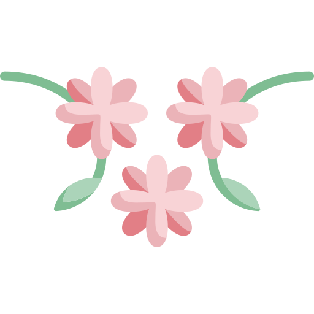

I'm Helia.
a design student.

a design student.

Hi, I'm an Iranian-Canadian student and I recently graduated from Dawson College with a Diploma in sciences. My goal is to integrate my knowledge and passion in sciences with my passion in design and arts.
If you would like to know more about me, you can check the links below!
I use pixel-art as a medium to design and animate characters and build different levels for video games.
Here is a link to my itch.io account where you can find my recent works.

Poison V
Size: 35x52 pixels
Date: Jan 2021
-Poison V is a character for a video game i made for "GE jam #3" game jam.

Magelf
Size: 48x58 pixels
Date: Jan 2021
-Magelf is also another character i made for a video game for "GE jam #3" game jam.

Bee
Size: 70x82 pixels
Date: Sep 2020
-Bee was made as a obstacle character for "Begginer's Circle Jam #2" game jam.
One of my favorite Hobbies is to make my own jewelery. I use metal, clay and fabrics.
Earings
Size: 2x9 cm, 4x4 cm and 6x6 cm
Date: summer 2020
Medium: Metal, clay and fabrics.

Tazhib is a form of traditional persian and islamic art. It is a combination of geometry and ornamental motifs. We use this form of art to decorate books and sacred monuments!

Flower Crown
Size: 21x29 cm
Date: May 2019
Medium: Watercolor and ink on paper
-This painting is inspired by the colors of spring.

Margin of the Sky
Size: 22x29 cm
Date: July 2020
Medium: Watercolor and ink on cardboard
-The blue background and the cloud ornaments are symbols of the sky.
I like to create cloths and dolls for my family and friends, by making different textures and patterns.
Knitted Doll
Size: 14x16 cm
Date: January 2019
Medium: Yarn
-I made this doll as a gift for my friend. The "K" on the belt stands for my friend's name "Kamyar"
Crochet Scarf
Size: 140x80 cm
Date: June 2018
Medium: Yarn
-This scarf is made of tiny crochet flowers and it is inspired by my mother's childhood scarf.
I use different mediums and different technics to draw anatomy and figures, perspectives and different textures!

Anatomy and Figure Drawing
Size: 21x29 cm
Date: December 2020
Medium: dry medium
-My courses on Human Anatomy and Physiology inspired me to draw the human body and skeleton in different positions and with different muscle compositions.
2-Point Perspective
Size: 21x29 cm
Date: September 2020
Medium: ink
-By using Vanishing points and changing the size and placement of buildings, i achieved depth.
Bugs in Space
Size: 51x66 cm
Date: November 2020
Medium: ink
-I used hatching and cross hatching to create different textures. I also used different shades and sizes to create depth.
Texture
Size: 10.5x14.5 cm
Date: september 2020
Medium: ink and dry medium
-Display of different textures that can be used as a reference for other art works.
I work with HTML and CSS and I am currently learning javascript.
You can click on the pictures to access the websites!
tindog
Date: August 2020
-tindog is a website i made for my web developement course, using HTML, CSS and javascript.


{kind=link}
{kind=link}
{kind=link}
{kind=link}
{kind=link}
{kind=link}
{kind=link}
{kind=link}